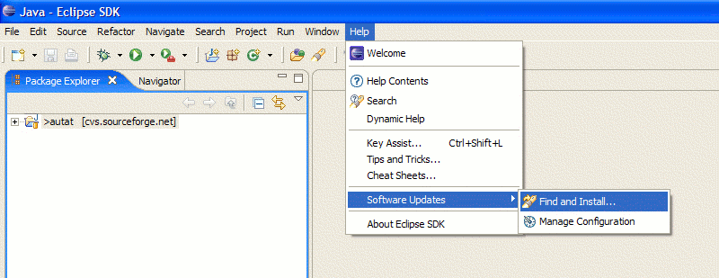
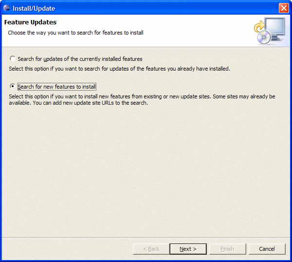
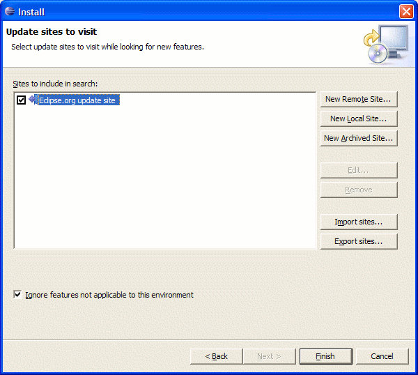
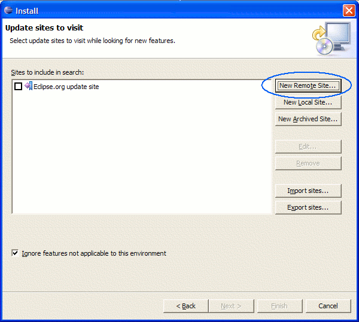
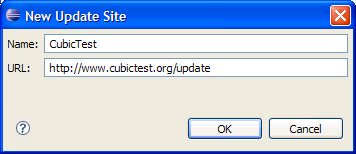

CubicTest


CubicTest requires minimum Java 5 and Eclipse 3.3. Ensure that these are installed before continuing.
When Java and Eclipse is installed, use the Eclipse Update Manager feature to install CubicTest into Eclipse.
Start with installing the Eclipse Graphical Editing Framework (GEF):
In Eclipse, go to Help -> Software updates -> Find and install

Select "Search for new features to install":

First install the Eclipse Graphical Editing Framework (GEF) by using the standard Eclipse.org update site:

Press "Finish" in the dialog above and select a mirror near you.
In the wizard that opens, select to install the Graphical Editing Framework and press the "Next" button.

Complete the install wizard that opens. Restart Eclipse if you are prompted to do so.
When GEF is installed, continue with the installation of CubicTest:
As before, the following window should be active: Eclipse -> Software updates -> Find and install -> Search for new features to install.
Select "New Remote Site..."

Enter URL:
http://www.cubictest.org/update/

Make sure only CubicTest is selected, and press "Finish":

Complete the install wizard that opens. Restart Eclipse if you are prompted to do so.
Your're done installing CubicTest!